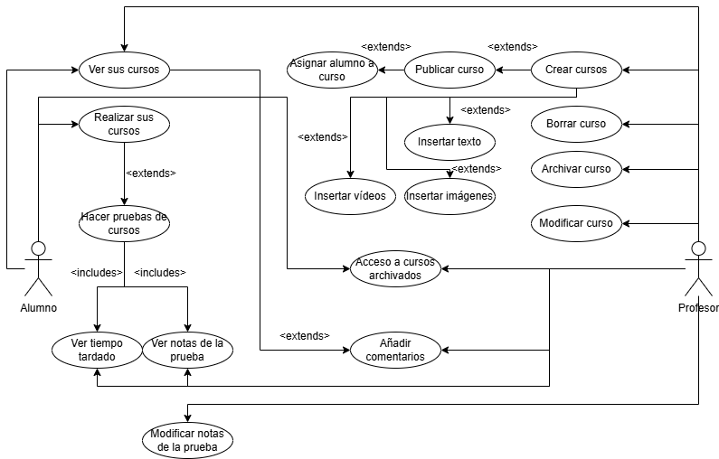
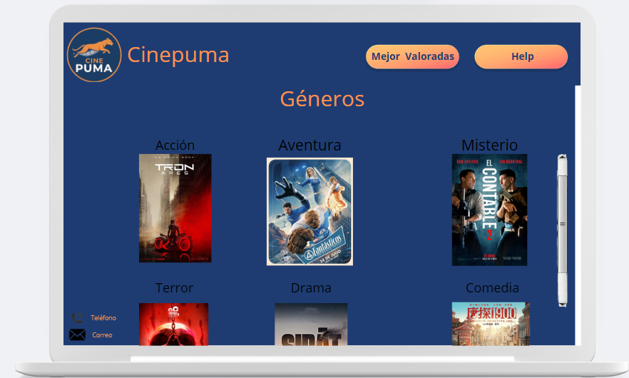

Este proyecto es de segundo de DAW. En dicho proyecto debemos diseñar y crear un sistema SCORM en el que interactúan tanto alumnos como profesores,
sabiendo que ambos no interactúan de la misma manera y teniendo en cuenta como accede a la plataforma cada uno.

Fig. 1. Casos de uso de un sistema SCORM de las acciones que pueden hacer un alumno y un profesor.
Cinepuma
Este proyecto también es de segundo. En este proyecto hacemos una aplicación web sobre películas en las que puedes ver reseñas,
buscar películas por género, por mejor valoradas, etc. De momento este proyecto está en desarrollo.

Fig 2. Prototipo de Cinepuma
Conecta 4
Este proyecto fue de primero de DAW. Teníamos que hacer el juego Conecta 4, o 4 en raya; en Java. Estaba pensado para que jugasen 2
personas en la misma mesa y que fueran turnandose dependiendo del turno del que le toque, usando el típico tablero
de 6 filas y 8 columnas.